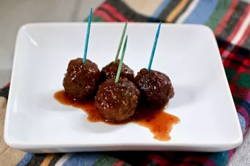
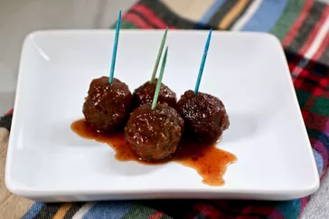

MEATBALL APPETIZER RECIPES
 

Description
Grape Jelly Meatballs are a popular appetizer known for their sweet and savory flavor
the meatballs are usually kept warm until ready to serve1. They can be garnished with parsley or chives if desired. These meatballs can be served as an appetizer, or they can be served over rice or pasta for a main dish.
In terms of nutrition:-
- Calories: A serving of Grape Jelly Meatballs can have around 340 calories.
- Fat: Total fat is around 15g, with 5g being saturated fat.
- Cholesterol: The cholesterol content is approximately 94mg.
- Sodium: Sodium content is around 176mg.
Please note that these values can vary.For instance, using leaner meat for the meatballs or reducing the amount of sauce can lower the calorie and fat content. Similarly, using low-sodium versions of the sauces can reduce the sodium content
Ingredients
These are the ingredients you’ll need to make this grape jelly meatball recipe:
- Jelly: Use store-bought or homemade grape jelly, 1 (32 ounce) jar grape jelly.
- Chili sauce: You’ll need two bottles of tomato-based chili sauce, 2 (12 ounce) bottles tomato-based chili sauce (such as Heinz).
- Cayenne: A pinch of cayenne pepper brings subtle heat, 1 pinch cayenne pepper (Optional).
- Meatballs: Frozen cocktail-sized meatballs make this recipe easy and convenient, 1 (6 pound) bag frozen cocktail-sized meatballs
Steps
- Cook the first three ingredients until warm:- Combine grape jelly, chili sauce, and cayenne pepper in a saucepan over medium-high heat; cook until warm, 5 to 10 minutes.
- Place the meatballs in a slow cooker and cover with the jelly mixture.
- Cook on Low for 3 to 4 hours.